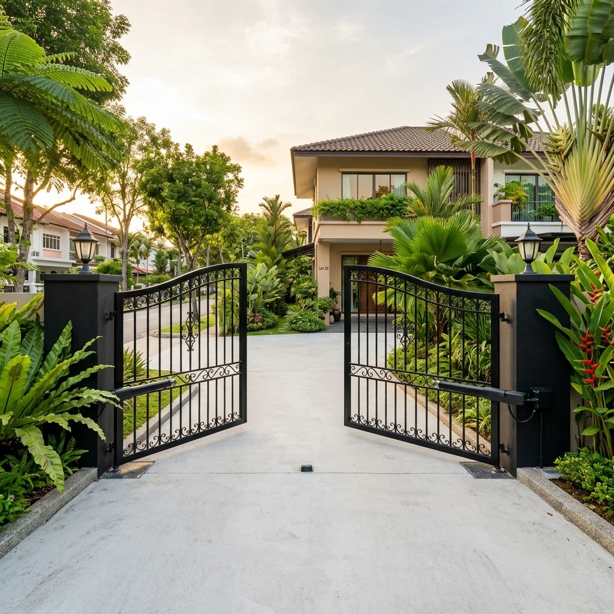
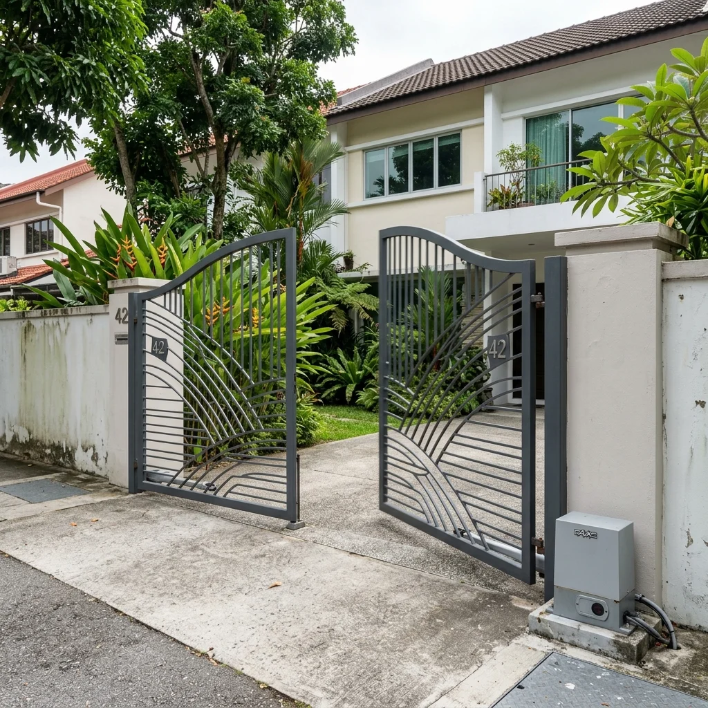
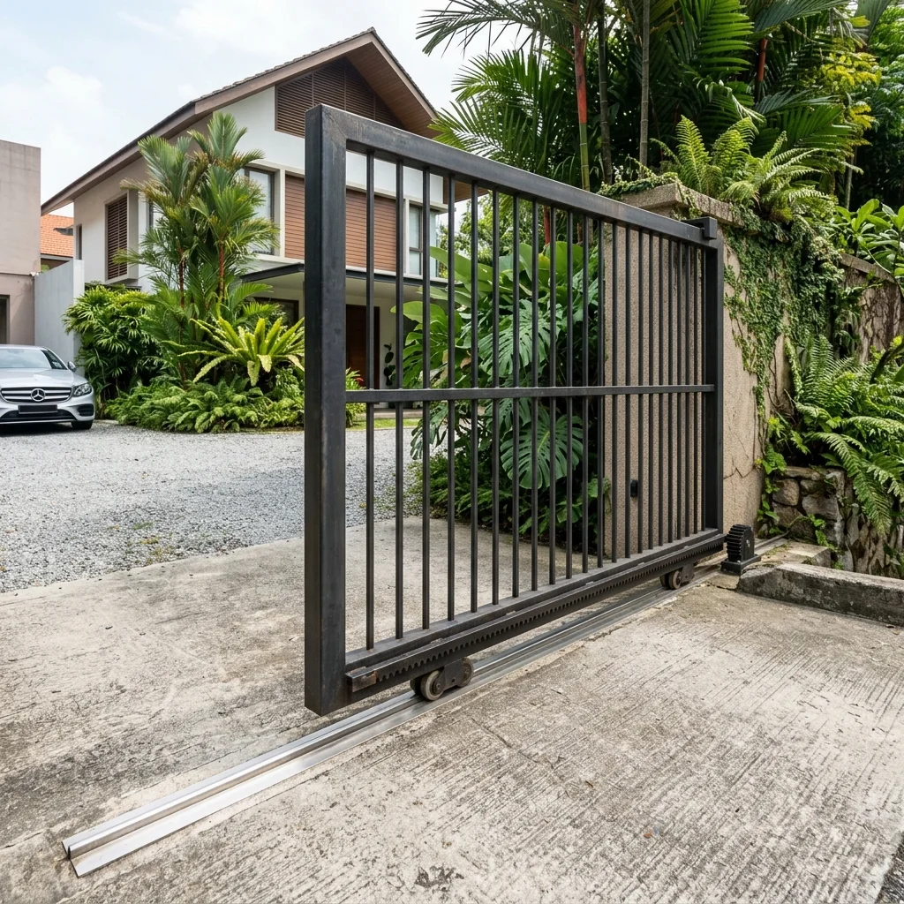
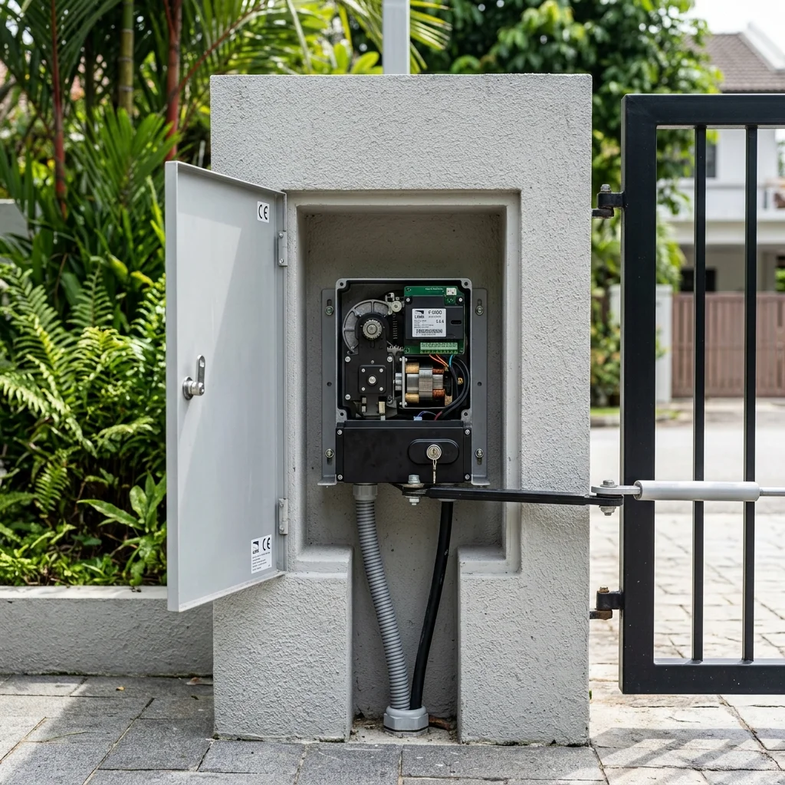
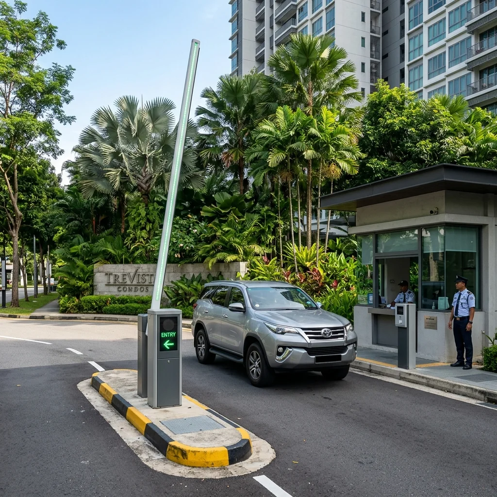

1. What Is an Auto Gate System?
An automatic gate system is a motorised assembly that opens and closes a gate using an electric motor, triggered by a remote control, access reader, or sensor. Beyond the convenience of not having to leave your vehicle, it serves as your property's first physical barrier — deterring unauthorised entry and defining the perimeter of your space.

Auto gate opening at Singapore landed propertyMore Than Just Convenience
A gate motor that works quietly and reliably every time is easy to take for granted — until it fails. This guide is written for the moment you need to make a real decision: choosing a system for a new home, replacing a failed motor, or upgrading to one with access control integration.
An auto gate system has three core jobs. First, it controls who and what enters your property. Second, it signals to the outside world that the premises are managed and monitored. Third, when integrated with an intercom or access reader, it becomes a fully automated entry management point.
Key Components of the System
The Gate Motor
The motor generates the torque required to push or pull the gate. Selecting an underpowered motor for your gate leaf size is the most common cause of premature mechanical failure.
The Control Board
The "brain" of the system. It receives signals from remotes, manages open/close cycles, monitors safety inputs, and stores auto-close timers and obstacle detection sensitivity.
Safety Beams
Photocell sensors that detect obstacles in the gate's path. A fundamental safety requirement for every professional installation, preventing impact with people or vehicles.
Access Triggers
Methods of activation including RF remotes, card readers, loop detectors, and smartphone apps for remote triggering via Wi-Fi modules.
2. Gate Types: Swing vs Sliding
The two dominant types in Singapore — swing and sliding — operate on fundamentally different principles and have different space requirements.

Dual-leaf swing gate opening inwardSwing Gates
A swing gate rotates around a fixed vertical hinge post. Most residential properties use dual-leaf swing gates. The critical consideration is the swing arc — you need clear driveway depth to allow the leaves to open without hitting parked vehicles or pedestrians.

Sliding gate on ground trackSliding Gates
A sliding gate travels horizontally along a ground track parallel to the boundary wall. It does not require driveway depth, making it ideal for short driveways. It requires clear wall space beside the opening equal to the gate width.
3. Motor Selection Guide
Motor selection is driven by gate type, size, and weight. Using an undersized motor shortens its lifespan and increases maintenance costs.

Concealed swing gate motor installationConcealed Swing Motors
For residential gates with leaf widths up to 2 metres, a concealed motor is the premium choice. The motor is buried within the post or ground housing, leaving no visible mechanical arms. Clean aesthetic finish that blends with the landscape.
Swing Arm Motors
When the gate leaf exceeds 2 metres or high cycle frequency is required (condominiums/commercial), a swing arm motor (like the FAAC 415) is the correct choice. Mounted on the post with a visible arm, these are built for high-duty cycles.
4. Access Control Integration
Modern gates are part of a connected ecosystem. Integrating the gate with your home security or building management system streamlines entry for residents and visitors.
Smartphone Control
Add a Wi-Fi module to operate your gate from anywhere via a mobile app. Ideal for receiving deliveries when not at home or managing staff access.
LPR Cameras
Licence Plate Recognition cameras read registration plates and trigger the gate/barrier automatically for authorised vehicles. No remotes or cards required.
5. Car Park Barriers

NICE barrier systems provide reliable, high-speed vehicle control in Singapore.Barriers are designed for throughput, not perimeter closure. Specified for condominium entrances and commercial car parks, they offer fast cycle times (1.5 - 3 seconds) and high-duty cycle motors.
A barrier is meant to manage traffic flow, not stop a determined intruder — which is why they are often used in conjunction with a heavier gate that is closed during low-activity hours.
Key specifying factors for barriers include the arm length (up to 8 metres), the voltage (24V DC for intensive use), and the integration with LPR cameras or IU readers commonly used in ERP-linked car parks across Singapore.
6. Safety Devices
A Moving gate carries significant force. Photocell beams, safety edges, and obstacle detection sensors are mandatory requirements to prevent impact with people or vehicles.
7. Site Assessment & Planning
Professional installation requires assessing post structure, cabling routes, and drainage. Poor drainage around a concealed motor housing is the leading cause of electrical failure in Singapore's tropical climate.
8. Investment Guide
Costs vary based on motor brand (FAAC vs Entry-level), civil works required, and access integration. Always request an itemised quote that includes safety devices and electrical compliance.
Securevision Quality Standard
We only install motors with full safety complements and 24/7 battery backup. We do not provide "motor-only" quotes that compromise safety standards.